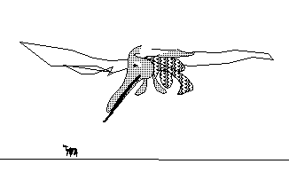
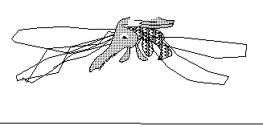

He is a general purpose hard working character around these web pages. Ant-control is his main line of business, but he moonlights as a mascot for software packages every so often. He still thinks it just might get him some exposure for his night job, as an actor in animated shorts. The following are stills from his work.


Here is page on anteater art that aaron likes.
Here is a little bit about some of his old neighbors down south.
up to ivtools home page.